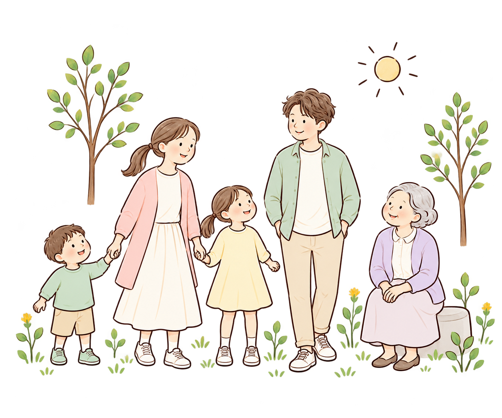

いくつになっても、新しい芽は育つ。
FIND YOUR START
今日は、何をしたいですか？
今のあなたに近い入り口から。
知りたいこと、やってみたいことから選べます。
WHAT’S ON YOUR MIND?
今日は、何を知りたい？
年齢に関係なく、気になることから探せます。
ONE SMALL STEP
小さな一歩を見つけよう
答えを急がず、今の自分に気づくことから。
「これならできそう」を、一緒に探してみませんか。
気づく → 知る → 考える → 選ぶ → やってみる
約1分・体験サンプル
これからも、続けたいことは？
あなたが大切にしたい時間から、
今日の小さな一歩を考えます。
ABOUT MIRAI LAB
確かな情報を、
暮らしにやさしい言葉で。
ミライラボは、薬剤師の専門性を生かして、薬・健康・暮らしをつなぐサイトを目指しています。知ることから、自分に合う選択へ。大切な人も、自分も大切にするための情報を届けます。
子どものお薬52記事を公開前の確認用として掲載しています。他の分野の内容は順次制作予定です。